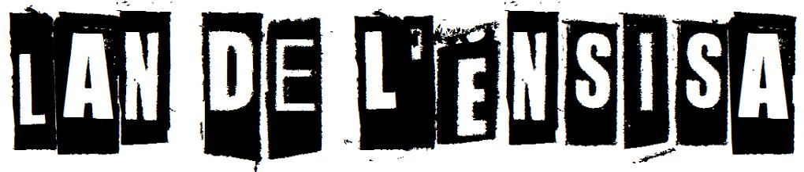
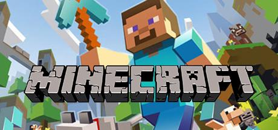
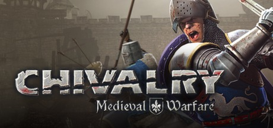

Serveurs dédiés de la LAN
| IP Mumble : 10.3.4.214 ou mumble | IP serveur Minecraft : 10.3.4.213 ou minecraft | |
| IP serveur Just Cause : 10.3.4.4 ou justcause | IP serveur Chivalry : 10.3.4.4 ou chivalry | |
 IP serveur Call of Duty 4 : 10.3.4.4Clé multijoueur : TUGE-SPQJ-LQDD-JT4E-70FD IP serveur Call of Duty 4 : 10.3.4.4Clé multijoueur : TUGE-SPQJ-LQDD-JT4E-70FD |
INFOS PRATIQUES
|